Оставьте заявку
Наш менеджер свяжется с Вами и проведёт бесплатную консультацию по стоимости и срокам
Мы работаем уже в 3-х городах, в нашей сети 5 сервисных центров и более 50 сотрудников с общим опытом более 100 лет!
Наш менеджер свяжется с Вами и проведёт бесплатную консультацию по стоимости и срокам
К Вам приедет наш мастер или курьер, также можете привезти Вашу технику к нам в сервис самостоятельно
После диагностики согласовываем с Вами стоимость ремонта. Производим ремонт техники, проверяем и выдаём гарантию на проведенные работы

Сеть сервисных центров «Сервисник» — это более 7 лет честной работы, развития и положительных эмоций наших клиентов. Мы вернули к жизни более 15 000 приборов и миллионы сохраненных денег на незапланированные покупки.
ПодробнееПосмотрите короткое видео о наших сервисных центрах и узнайте наших профессионалов в лицо
Ремонт и обслуживание цифровой и бытовой техники
в наших сервисных центрах
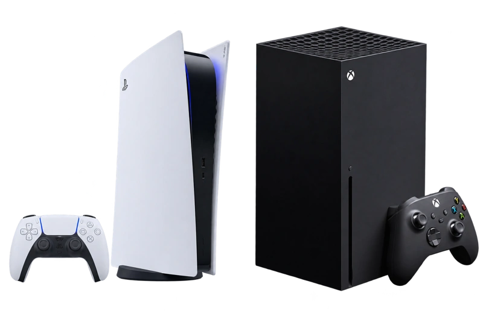
Кофемашины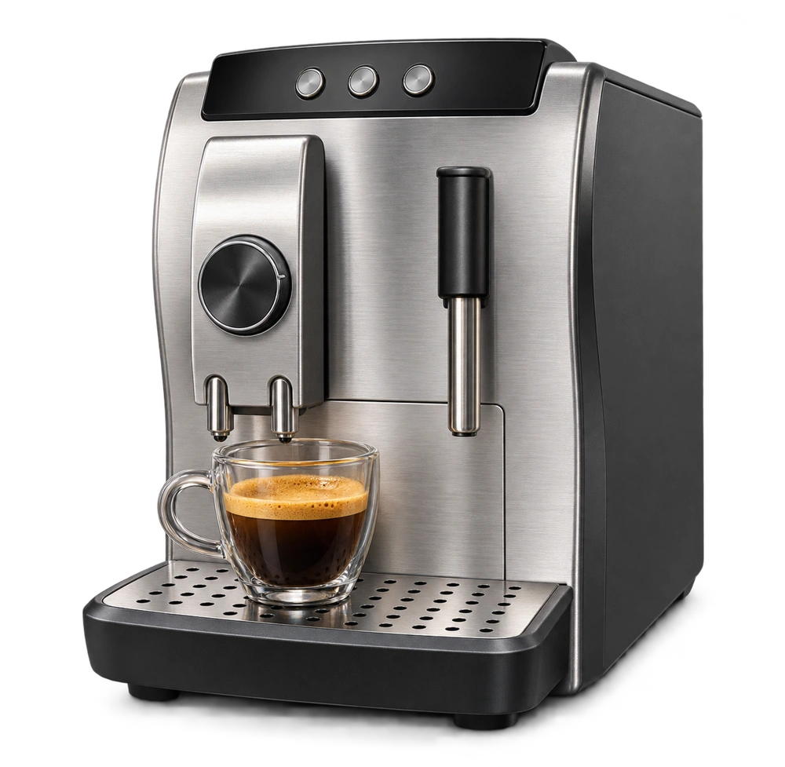
Лазерные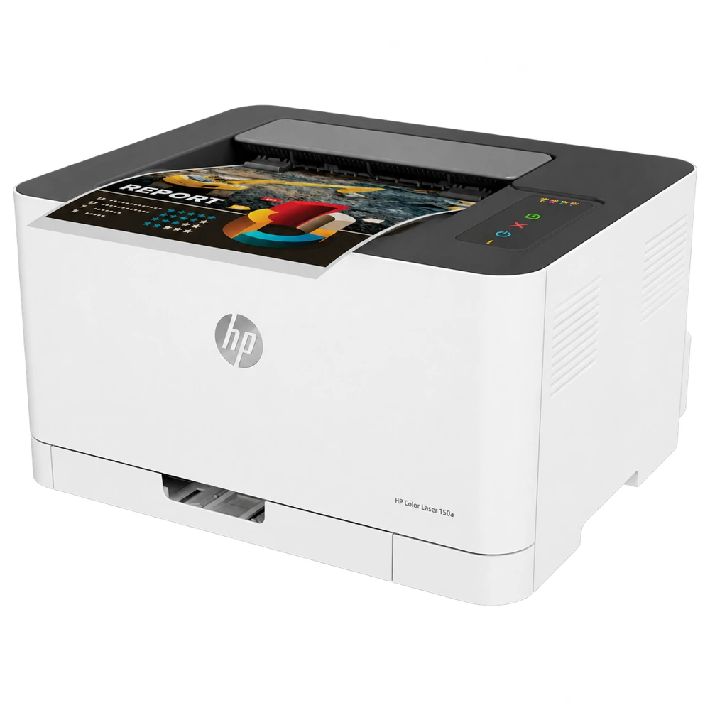
Микроволновые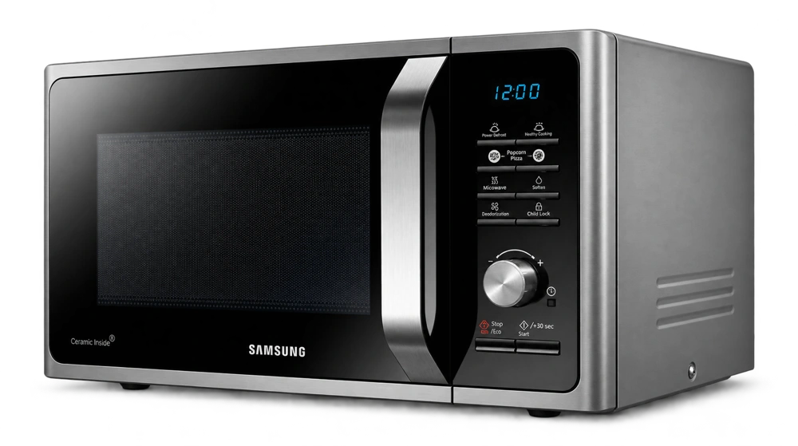
НаушникиРоботы-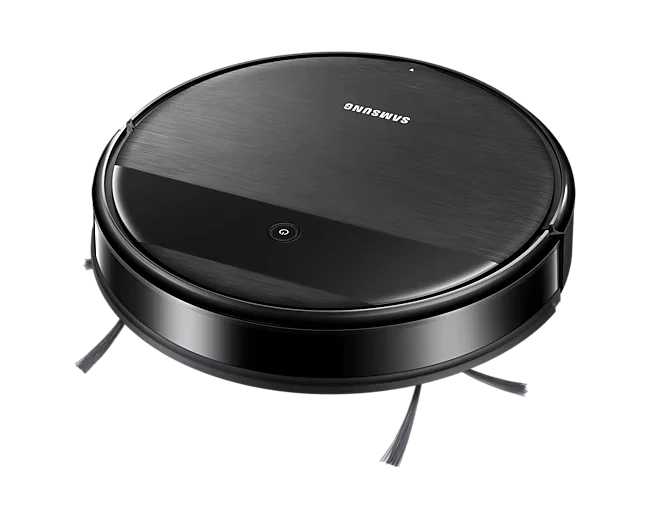
Сварочные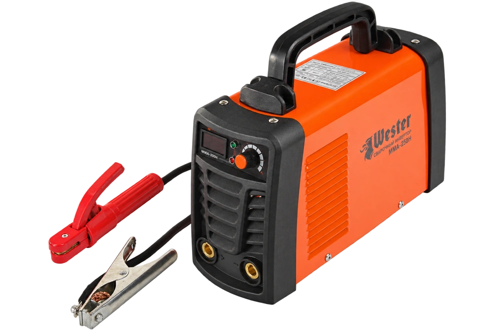
Стабилизаторы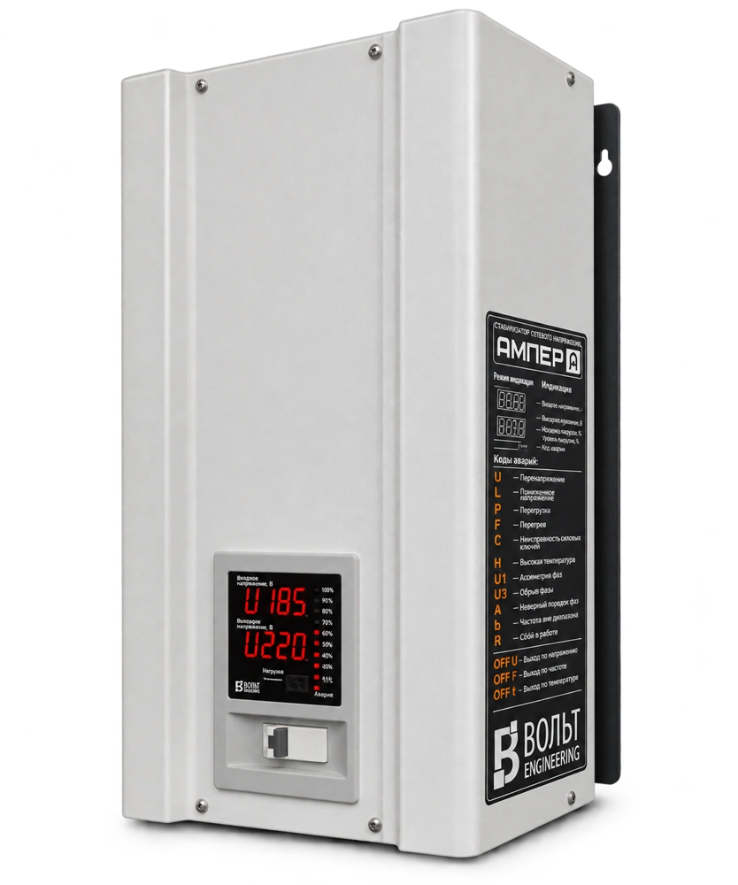
Стиральные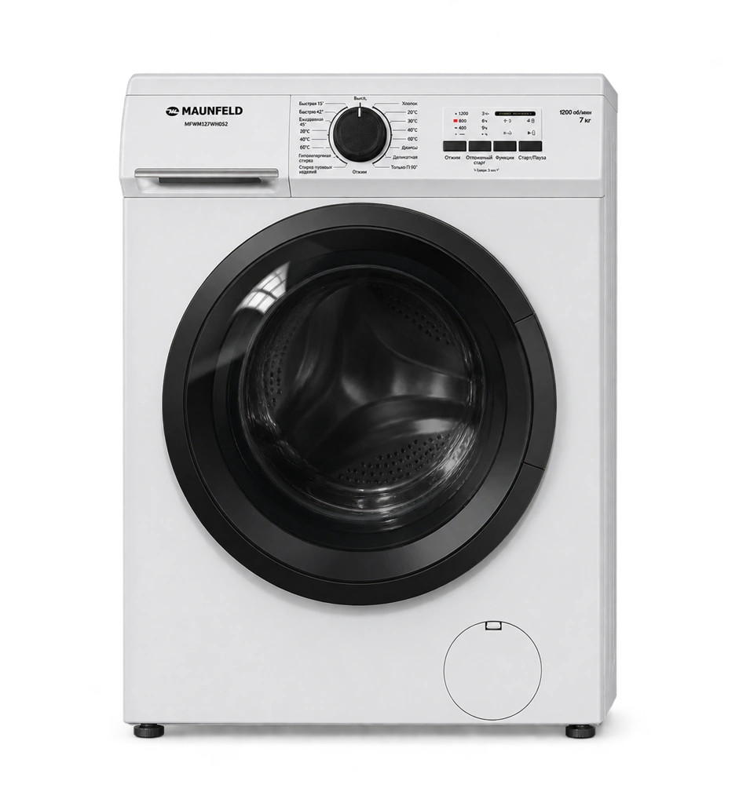
Телевизоры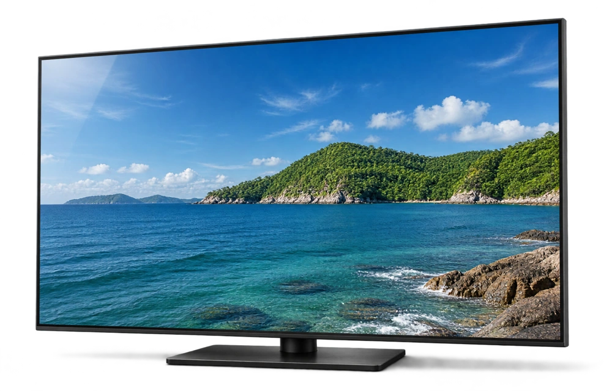
Холодильники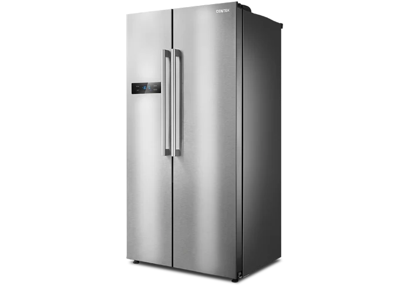
Частотные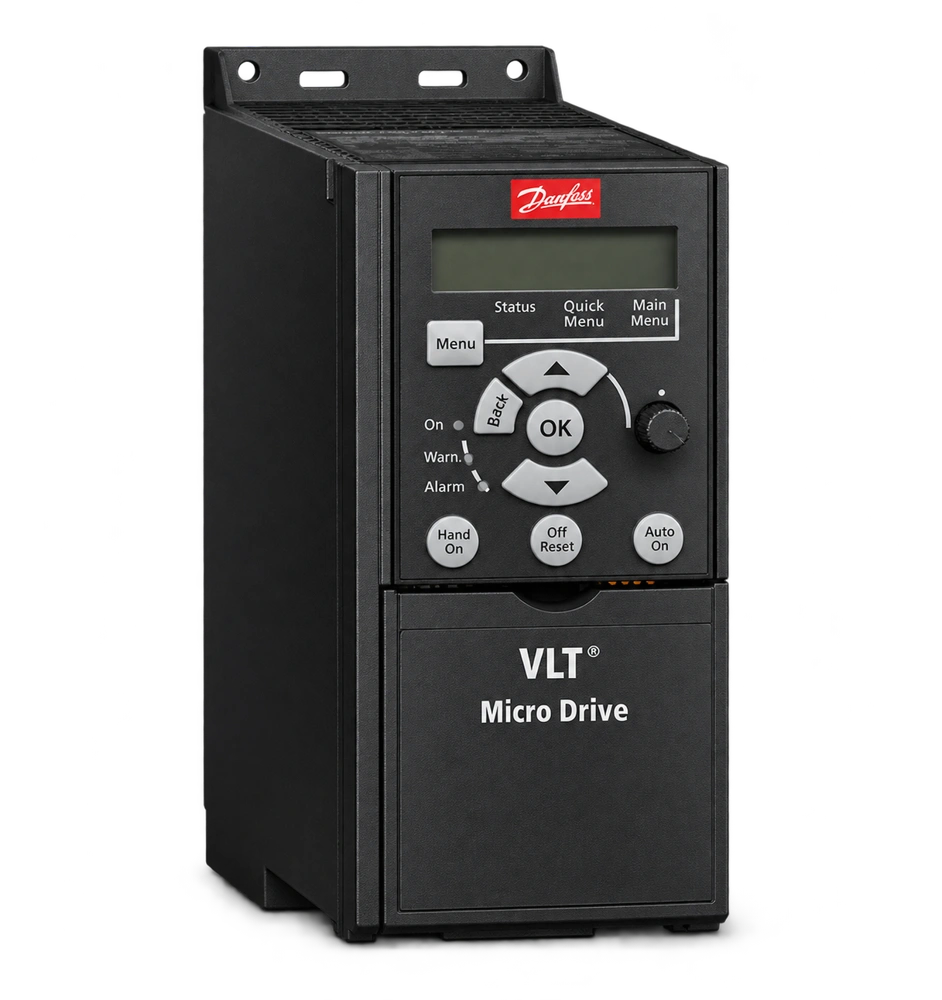
Оставьте заявку и мы перезвоним
Выберите карточку, чтобы прочитать отзыв
Новороссийск
Мне нравится работа ребят, все честно и быстро если в наличие запчасти. Обращаюсь уже не первый раз. Чинила на этот раз фен, совсем быстро починили. Спасибо. Рекомендую)
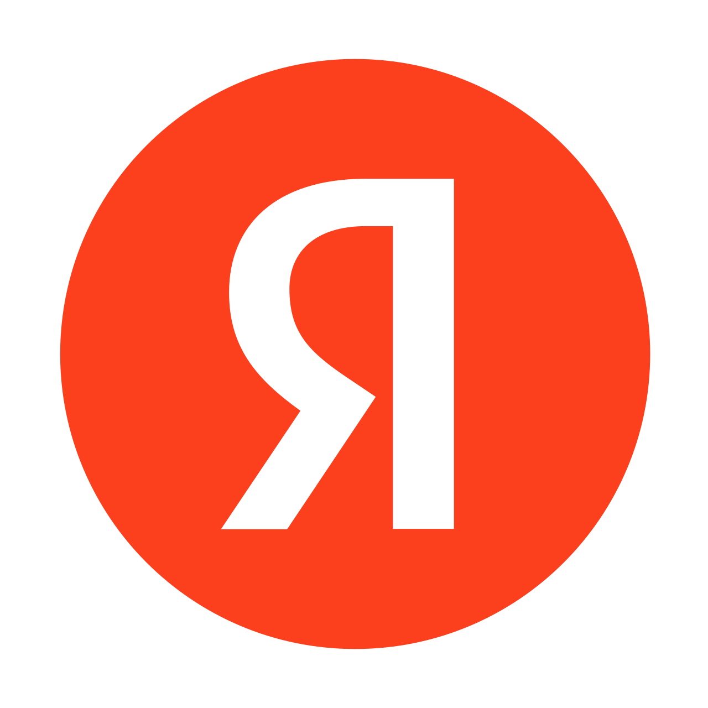
ЯндексКраснодар
Отличные ребята! Поломался телевизор сони. Обратилась к ребятам за помощью. В течении двух часов мастер уже был у меня. Просто супер🔥 . /До этого обращалась к другим спецам полтора суток ждала...
Анапа
Сервисник на Новоросийской 281 в г. АНАПЕ. СУПЕР. ВСЕМ СОВЕТУЮ. После перепада напряжения полетел сервер со швейной машинки. Отвезла в сервисник,5 дней и все на отлично готово. Все работает!
Наши сильные стороны — это честность, желание помочь клиентам и правильная атмосфера в команде сервиса
Собственные курьеры и выездные мастера, которые оперативно приедут к Вам
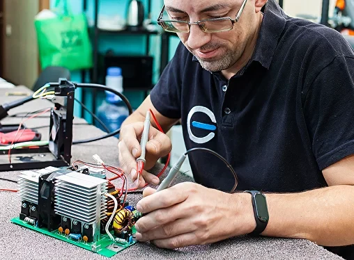
Большой склад запчастей от оригинальных до аналогов. Поставим качественную запчасть на Ваш выбор
Работаем официально с заключением документов на каждый ремонт
Вы можете в любой момент проверить статус ремонта на сайте только по своему номеру телефона, по которому сдавали технику
На всех филиалах нашей компании работает более 50 специалистов с совокупным опытом более 100 лет.
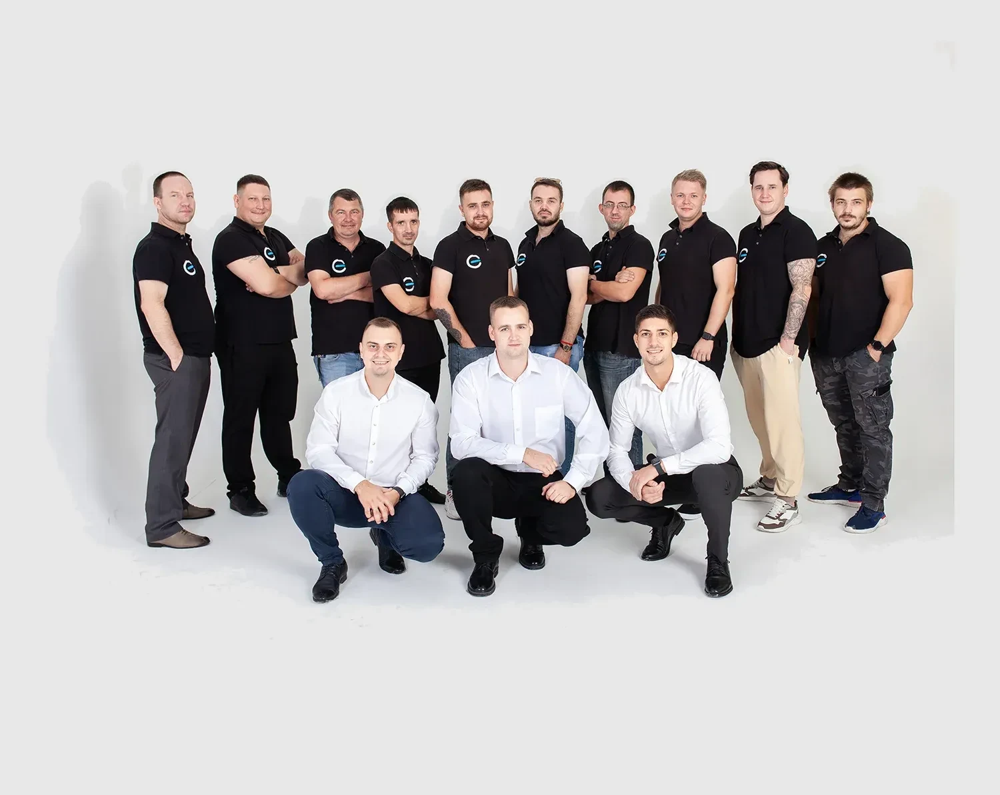
Мы всегда готовы к диалогу. Если у вас есть вопросы по качеству оказываемых услуг, свяжитесь с нами напрямую.
Если у вас есть вопрос, предложение или вас плохо обслужили, Вы можете написать напрямую директору и мы сможем быстро помочь в любом вопросе.
Если Вы хотите оставить письменную претензию, то нажмите на эту кнопку, опишите ситуацию и мы ответим на указанный адрес в течение 3-х рабочих дней.
Основатель и совладелец
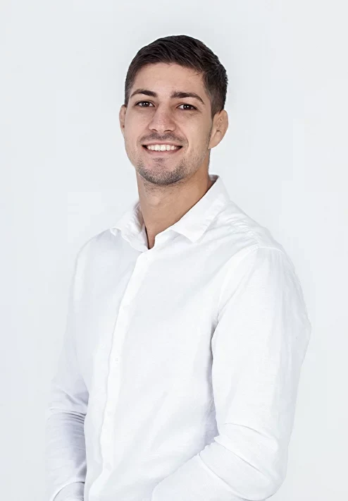
Совладелец
Исполнительный директор
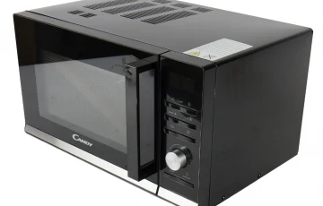
Разновидности микроволновых печей и их различия: Микроволновые печи - это неотъемлемая часть соврем...
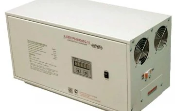
Данная публикация составлена и выпущена специалистами сети сервисных центров servicenik.ru на основе...
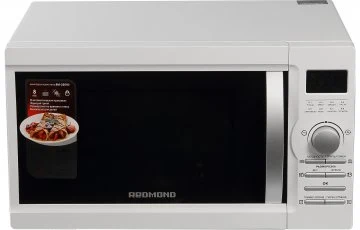
Микроволновые печи могут подвергаться различным неисправностям. Вот несколько общих проблем, с котор...
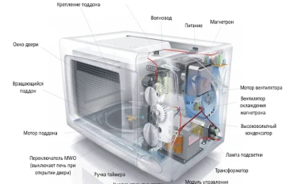
Данная публикация составлена и выпущена специалистами сети сервисных центров servicenik.ru. на основ...
На небольшом экране таблицу можно прокручивать в сторону.
| Все адреса | Адрес | Контакты | На карте |
|---|---|---|---|
| Сервисный центр | Анапа, Новороссийская, 281Ежедневно 9:00-18:00 | 8 (999) 444-95-92 | Найти на карте |
| Сервисный центр | Краснодар, Российская, 352Ежедневно 9:00-19:00 | 8 (861) 238-70-81 | Найти на карте |
| Сервисный центр | Краснодар, Бабушкина, 295Ежедневно 9:00-19:00 | 8 (861) 201-60-31 | Найти на карте |
| Сервисный центр | Новороссийск, Анапское ш. 41ЕЕжедневно 9:00-19:00 | 8 (861) 730 64 79 | Найти на карте |
| Пункт приёма техники | Точка Сервисник Оливковая 1 стр1Ежедневно 10:00-20:00 | 89183909050 | Найти на карте |
| Пункт приёма техники | БензоЭлектро Сервис. Анапское шоссе 105С 9 до 17 часов, выходной СБ-ВС | +79582953002 | Найти на карте |
| Пункт приёма техники | Точка Сервисник им. Марины Цветаевой 7/к1Ежедневно 10:00-20:00 | 89183909050 | Найти на карте |
| Пункт приёма техники | Сервис ремонта техники. Героев Десантников 2/3ВТ-СБ 09:00-19:00, выходные ВС-ПН | 8 (861) 730-20-78 | Найти на карте |
По выбранным фильтрам адресов нет.